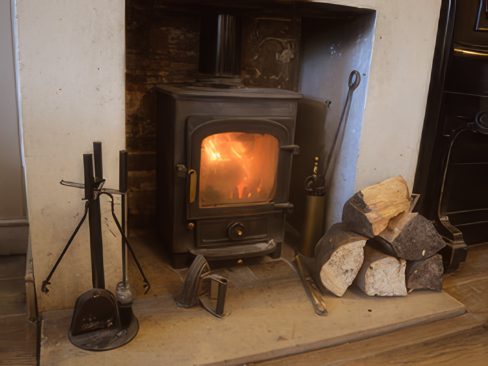

Come and see us
Find us & bookings
Planning a meal or a Dorset stay? Get in touch with The Oak at Dewlish.
The Oak at Dewlish
We'd love to welcome you
FoodTraditional home-cooked pub food in a friendly, informal atmosphere.
AccommodationCoach House and B&B rooms available.
Telephone
01258 837352
